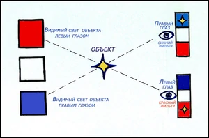
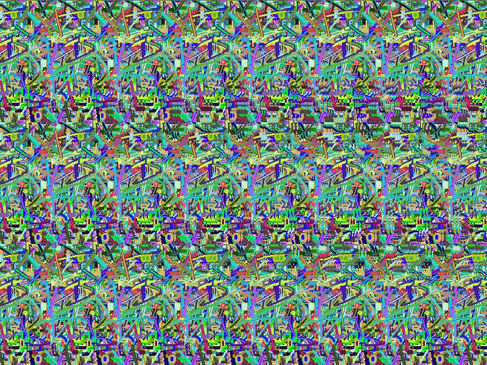
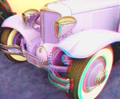

Стереоизображения
Введение
Стереоизображение — картина, фильм или видеоряд, использующий минимум два отдельных изображения одного объекта и тем позволяющий достичь стереоэффекта
за счёт одновременного рассматривания обеими глазами отдельных изображений. При этом мозг интерпретирует раздельные изображения, наблюдаемые с параллаксом,
как единую и цельную объёмную сцену.
Для создания и просмотра стереоизображений используются различные устройства и методы:
Метод сквозного взгляда
Этот метод позволяет видеть стереокартинку без использования какого-либо оборудования. Стереоизображение подготавливается в виде стереопары (две картинки,
рядом друг с другом размещаемые, левая из которых предназначена для левого глаза наблюдателя, а правая для правого). Наблюдатель должен глядеть сквозь
стереопару таким образом, чтобы левый глаз его видел левую картинку, а правый правую. Глаза фокусируются на расстояние, равное расстоянию
до стереопары, но линии взгляда наблюдателя не скрещиваются на этом расстоянии, а продолжаются гораздо далее его. В мозгу наблюдателя создаётся ощущение
стереоизображения, по размерам равного каждой из картинок стереопары, и расположенного на том же расстоянии, что и они.
Этот метод непригоден для просмотра крупных стереоизображений (размером более 60—70 мм каждое), что обуславливается межзрачковым расстоянием человека
и невозможностью смотреть по расходящимся линиям взгляда.Метод перекрёстного взгляда
Этот метод (также, как и предыдущий) позволяет видеть стереокартинку без использования какого-либо оборудования. Стереоизображение подготавливается в виде конвергентной стереопары (две картинки, рядом друг с другом размещаемые, левая из которых предназначена для правого глаза наблюдателя, а правая для левого). Наблюдатель должен глядеть сквозь стереопару таким образом, чтобы левый глаз его видел правую картинку, а левый правую. Глаза фокусируются на расстояние, равное расстоянию до стереопары, но линии взгляда наблюдателя скрещиваются не на этом расстоянии, а задолго до наблюдаемой стереопары, создавая в мозгу ощущение более близкого, более чёткого, но пропорционально меньшего по размеру изображения.
- Так, например, если ширина каждой из двух картинок конвергентной стереопары в точности равна межзрачковому расстоянию глаз наблюдателя, тогда линии взгляда наблюдателя скрещиваются ровно на полпути к стереопаре, создавая ощущение вдвое более близкого, вдвое более чёткого, но вдвое меньшего по размерам изображения.
- Применяя Шаблон:Нет пересказа к равнобедренной трапеции, основаниями которой являются межзрачковое расстояние наблюдателя и удвоенная ширина любой из двух картинок стереопары, нетрудно получить, что отношение ширины наблюдаемого изображения к межзрачковому расстоянию наблюдателя и отношение ширины наблюдаемого изображения к ширине любой из двух картинок стереопары — это два такие отношения, которые в сумме дают единицу (будучи равны двум отношениям длин одной и другой частей боковой стороны трапеции к целой длине стороны). Следовательно, ширина наблюдаемого изображения никогда не будет превосходить межзрачковое расстояние наблюдателя, и вообще она равна отношению k к (k+1), где k — отношение ширины любой из двух картинок стереопары к межзрачковому расстоянию наблюдателя. Например, если ширина любой из двух картинок стереопары вдвое превосходит межзрачковое расстояние наблюдателя, тогда ширина наблюдаемого стереоизображения составит две трети от межзрачкового расстояния наблюдателя, и изображение это будет находиться втрое ближе ко глазам наблюдателя, нежели стереопара.
Наблюдатель должен приучить себя к фокусированию глаз на расстояние до стереопары в то время, как в мозгу его создаётся изображение заметно более близкое. Соответственно, этот способ вызывает несколько большее напряжение глаз, чем предыдущий, зато пригоден для просмотра стереоизображений, ширина картинок которых превосходит межзрачковое расстояние наблюдателя.Анаглифовые очки
Этот метод использует разноцветные очки, вместо линз у которых вставлены светофильтры дополнительных цветов. Дешёвый, но достаточно эффективный метод,
физически он не обеспечивает правильную передачу цвета стереоизображения, однако нервная система довольно хорошо интерпретирует его.
Время адаптации зрения к этому методу составляет около 30 секунд, после длительного использования на пропорциональный период нарушается цветовосприятие.